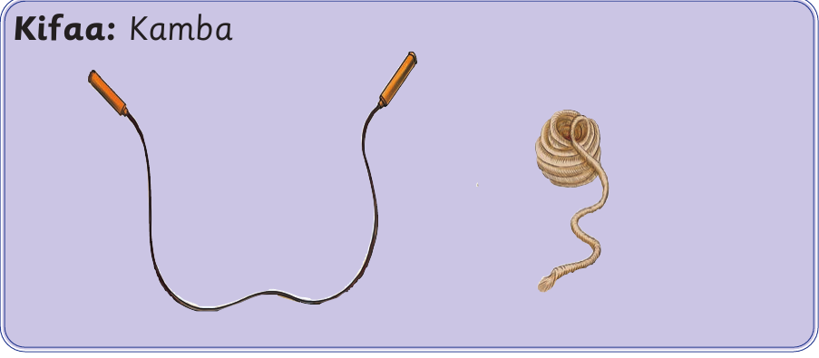
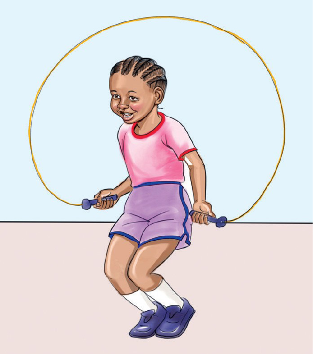
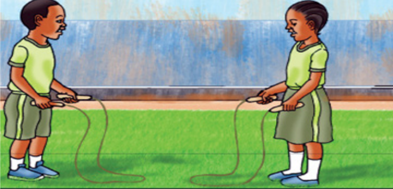
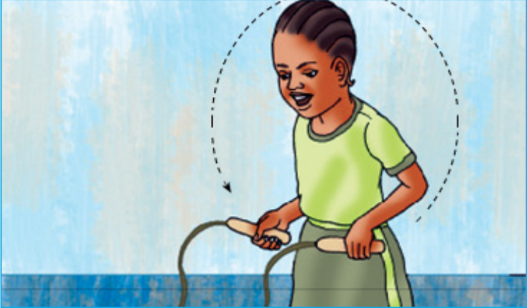

Tucheze mchezo wa kuruka kamba
Kuruka kamba kwa miguu miwili
Kifaa: Kamba.

Kuna aina mbili za kuruka kamba: mtu mmoja, au watu wawili na zaidi.
Mchezaji mmoja hurusha kamba yake na kuruka mwenyewe kwa miguu miwili au mmoja.

Jinsi ya kuruka kamba kwa miguu miwili
- Shika mwanzo wa kamba kwa mkono mmoja.
- Shika mwisho wa kamba kwa mkono mwingine.
- Irushe kamba juu kwenda mbele kutoka nyuma yako.
- Kamba inapotua chini iruke bila kuikanyaga.
- Anza kuruka kamba kwa miguu miwili.
- Endelea kuruka huku ukihesabu.
- Ukiikanyaga kamba utamwachia mwenzio.
- Atakayeruka mara nyingi bila kukanyaga ndiye mshindi.

